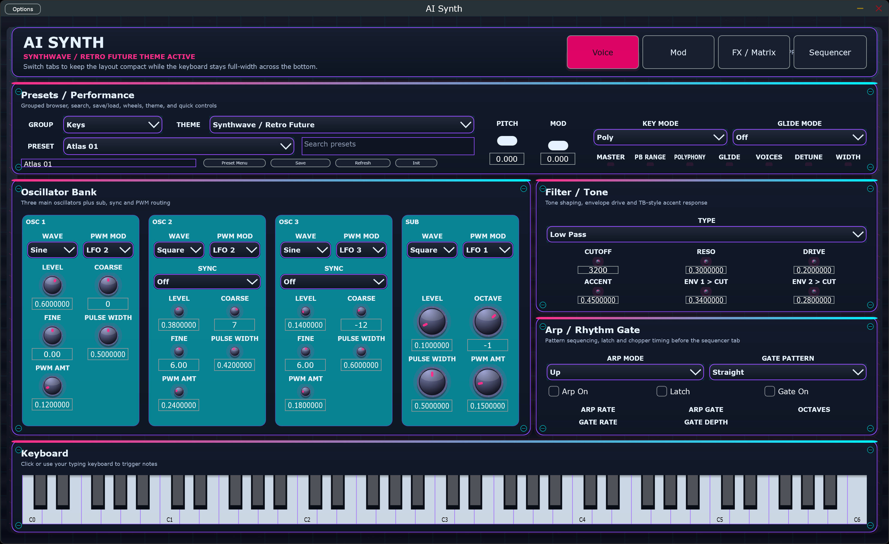
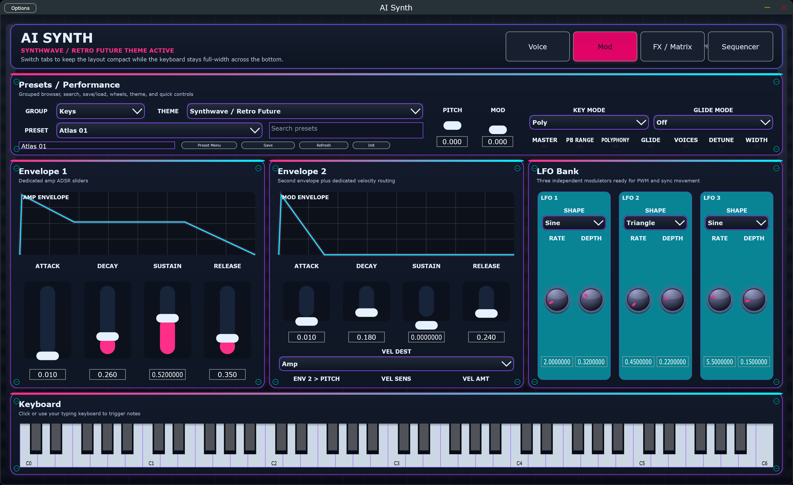
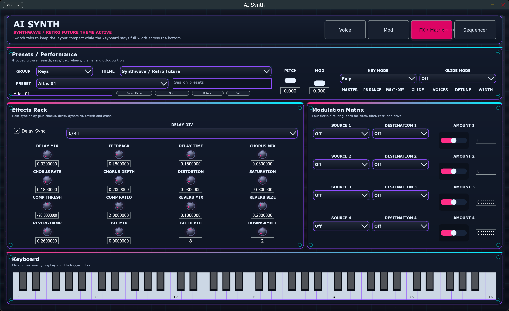
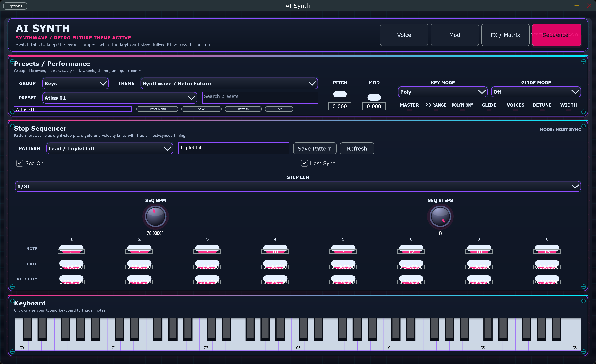

Windows
Ready-to-run standalone app and VST3 bundle for local use or DAW installs.
Standalone + VSTi
A JUCE-based software synth with a compact tabbed front panel, playable full-width keyboard, modulation routing, sequencer, presets, and GitHub-hosted downloads for both standalone and VST3 use.

The site points at the rolling latest-build GitHub release, updated automatically on each push to main or master.
Ready-to-run standalone app and VST3 bundle for local use or DAW installs.
Freshly packaged macOS bundles from the latest GitHub build.
Latest Linux standalone binary and VST3 bundle zipped from CI.
Looking for every asset in one place? Open the latest build release.
If AI Synth is useful for your sessions, you can help fund more presets, polish, and new features.
Support ongoing development, preset design, UI work, and future releases.
Fresh captures from the standalone app, with one slide per major tab so each feature area reads clearly.



Built for both local play and plugin-host workflows.
From the repo root:
powershell -ExecutionPolicy Bypass -File .\build-local.ps1 -Target All
The standalone app is written to build\AISynth_artefacts\Release\Standalone\AI Synth.exe.